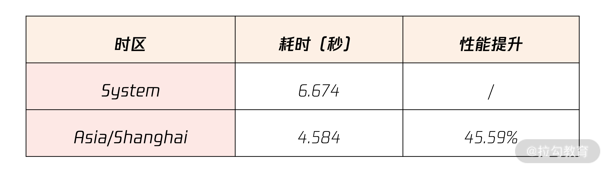

- 00 开篇词 从业务出发，开启海量 MySQL 架构设计.md.html
- 01 数字类型：避免自增踩坑.md.html
- 02 字符串类型：不能忽略的 COLLATION.md.html
- 03 日期类型：TIMESTAMP 可能是巨坑.md.html
- 04 非结构存储：用好 JSON 这张牌.md.html
- 05 表结构设计：忘记范式准则.md.html
- 06 表压缩：不仅仅是空间压缩.md.html
- 07 表的访问设计：你该选择 SQL 还是 NoSQL？.md.html
- 08 索引：排序的艺术.md.html
- 09 索引组织表：万物皆索引.md.html
- 10 组合索引：用好，性能提升 10 倍！.md.html
- 11 索引出错：请理解 CBO 的工作原理.md.html
- 12 JOIN 连接：到底能不能写 JOIN？.md.html
- 13 子查询：放心地使用子查询功能吧！.md.html
- 14 分区表：哪些场景我不建议用分区表？.md.html
- 15 MySQL 复制：最简单也最容易配置出错.md.html
- 16 读写分离设计：复制延迟？其实是你用错了.md.html
- 17 高可用设计：你怎么活用三大架构方案？.md.html
- 18 金融级高可用架构：必不可少的数据核对.md.html
- 19 高可用套件：选择这么多，你该如何选？.md.html
- 20 InnoDB Cluster：改变历史的新产品.md.html
- 21 数据库备份：备份文件也要检查！.md.html
- 22 分布式数据库架构：彻底理解什么叫分布式数据库.md.html
- 23 分布式数据库表结构设计：如何正确地将数据分片？.md.html
- 24 分布式数据库索引设计：二级索引、全局索引的最佳设计实践.md.html
- 25 分布式数据库架构选型：分库分表 or 中间件 ？.md.html
- 26 分布式设计之禅：全链路的条带化设计.md.html
- 27 分布式事务：我们到底要不要使用 2PC？.md.html
- 捐赠
03 日期类型：TIMESTAMP 可能是巨坑
前两讲我带你了解了 MySQL 数据库中常见的数字类型和字符串类型，除了这两种类型外，日期类型也较为常见。
几乎每张业务表都带有一个日期列，用于记录每条记录产生和变更的时间。比如用户表会有一个日期列记录用户注册的时间、用户最后登录的时间。又比如，电商行业中的订单表（核心业务表）会有一个订单产生的时间列，当支付时间超过订单产生的时间，这个订单可能会被系统自动取消。
日期类型虽然常见，但在表结构设计中也容易犯错，比如很多开发同学都倾向使用整型存储日期类型，同时也会忽略不同日期类型对于性能可能存在的潜在影响。所以你有必要认真学习这一讲，举一反三，在自己的业务中做好日期类型的设计。
日期类型
MySQL 数据库中常见的日期类型有 YEAR、DATE、TIME、DATETIME、TIMESTAMEP。因为业务绝大部分场景都需要将日期精确到秒，所以在表结构设计中，常见使用的日期类型为DATETIME 和 TIMESTAMP。接下来，我就带你深入了解这两种类型，以及它们在设计中的应用实战。
DATETIME
类型 DATETIME 最终展现的形式为：YYYY-MM-DD HH：MM：SS，固定占用 8 个字节。
从 MySQL 5.6 版本开始，DATETIME 类型支持毫秒，DATETIME(N) 中的 N 表示毫秒的精度。例如，DATETIME(6) 表示可以存储 6 位的毫秒值。同时，一些日期函数也支持精确到毫秒，例如常见的函数 NOW、SYSDATE：
mysql> SELECT NOW(6);
+----------------------------+
| NOW(6) |
+----------------------------+
| 2020-09-14 17:50:28.707971 |
+----------------------------+
1 row in set (0.00 sec)
用户可以将 DATETIME 初始化值设置为当前时间，并设置自动更新当前时间的属性。例如之前已设计的用户表 User，我在其基础上，修改了register_date、last_modify_date的定义：
CREATE TABLE User (
id BIGINT NOT NULL AUTO_INCREMENT,
name VARCHAR(255) NOT NULL,
sex CHAR(1) NOT NULL,
password VARCHAR(1024) NOT NULL,
money INT NOT NULL DEFAULT 0,
register_date DATETIME(6) NOT NULL DEFAULT CURRENT_TIMESTAMP(6),
last_modify_date DATETIME(6) NOT NULL DEFAULT CURRENT_TIMESTAMP(6) ON UPDATE CURRENT_TIMESTAMP(6),
CHECK (sex = 'M' OR sex = 'F'),
PRIMARY KEY(id)
);
在上面的表 User 中，列 register_date 表示注册时间，DEFAULT CURRENT_TIMESTAMP 表示记录插入时，若没有指定时间，默认就是当前时间。
列 last_modify_date 表示当前记录最后的修改时间，DEFAULT CURRENT_TIMESTAMP(6) ON UPDATE CURRENT_TIMESTAMP(6) 表示每次修改都会修改为当前时间。
这样的设计保证当用户的金钱（money 字段）发生了变更，则 last_modify_date 能记录最后一次用户金钱发生变更时的时间。来看下面的例子：
mysql> SELECT name,money,last_modify_date FROM User WHERE name = 'David';
+-------+-------+----------------------------+
| name | money | last_modify_date |
+-------+-------+----------------------------+
| David | 100 | 2020-09-13 08:08:33.898593 |
+-------+-------+----------------------------+
1 row in set (0.00 sec)
mysql> UPDATE User SET money = money - 1 WHERE name = 'David';
Query OK, 1 row affected (0.06 sec)
Rows matched: 1 Changed: 1 Warnings: 0
mysql> SELECT name,money,last_modify_date FROM User WHERE name = 'David';
+-------+-------+----------------------------+
| name | money | last_modify_date |
+-------+-------+----------------------------+
| David | 99 | 2020-09-14 18:29:17.056327 |
+-------+-------+----------------------------+
1 row in set (0.00 sec)
可以看到，当用户金额发生修改时，所对应的字段 last_modify_date 也修改成发生变更的时间。
TIMESTAMP
除了 DATETIME，日期类型中还有一种 TIMESTAMP 的时间戳类型，其实际存储的内容为‘1970-01-01 00:00:00’到现在的毫秒数。在 MySQL 中，由于类型 TIMESTAMP 占用 4 个字节，因此其存储的时间上限只能到‘2038-01-19 03:14:07’。
同类型 DATETIME 一样，从 MySQL 5.6 版本开始，类型 TIMESTAMP 也能支持毫秒。与 DATETIME 不同的是，若带有毫秒时，类型 TIMESTAMP 占用 7 个字节，而 DATETIME 无论是否存储毫秒信息，都占用 8 个字节。
类型 TIMESTAMP 最大的优点是可以带有时区属性，因为它本质上是从毫秒转化而来。如果你的业务需要对应不同的国家时区，那么类型 TIMESTAMP 是一种不错的选择。比如新闻类的业务，通常用户想知道这篇新闻发布时对应的自己国家时间，那么 TIMESTAMP 是一种选择。
另外，有些国家会执行夏令时。根据不同的季节，人为地调快或调慢 1 个小时，带有时区属性的 TIMESTAMP 类型本身就能解决这个问题。
参数 time_zone 指定了当前使用的时区，默认为 SYSTEM 使用操作系统时区，用户可以通过该参数指定所需要的时区。
如果想使用 TIMESTAMP 的时区功能，你可以通过下面的语句将之前的用户表 User 的注册时间字段类型从 DATETIME(6) 修改为 TIMESTAMP(6)：
ALTER TABLE User
CHANGE register_date
register_date TIMESTAMP(6) NOT NULL DEFAULT CURRENT_TIMESTAMP
(6);
这时通过设定不同的 time_zone，可以观察到不同时区下的注册时间：
mysql> SELECT name,regist er_date FROM User WHERE name = 'David';
+-------+----------------------------+
| name | register_date |
+-------+----------------------------+
| David | 2018-09-14 18:28:33.898593 |
+-------+----------------------------+
1 row in set (0.00 sec)
mysql> SET time_zone = '-08:00';
Query OK, 0 rows affected (0.00 sec)
mysql> SELECT name,register_date FROM User WHERE name = 'David';
+-------+----------------------------+
| name | register_date |
+-------+----------------------------+
| David | 2018-09-14 02:28:33.898593 |
+-------+----------------------------+
1 row in set (0.00 sec)
从上述例子中，你可以看到，中国的时区是 +08:00，美国的时区是 -08:00，因此改为美国时区后，可以看到用户注册时间比之前延迟了 16 个小时。当然了，直接加减时区并不直观，需要非常熟悉各国的时区表。在 MySQL 中可以直接设置时区的名字，如：
mysql> SET time_zone = 'America/Los_Angeles';
Query OK, 0 rows affected (0.00 sec)
mysql> SELECT NOW();
+---------------------+
| NOW() |
+---------------------+
| 2020-09-14 20:12:49 |
+---------------------+
1 row in set (0.00 sec)
mysql> SET time_zone = 'Asia/Shanghai';
Query OK, 0 rows affected (0.00 sec)
mysql> SELECT NOW();
+---------------------+
| NOW() |
+---------------------+
| 2020-09-15 11:12:55 |
+---------------------+
1 row in set (0.00 sec)
讲到这儿，想必你已经了解了时间字段类型，接下来我将分享在真实业务设计中如何使用好时间类型。
业务表结构设计实战
DATETIME vs TIMESTAMP vs INT，怎么选？
在做表结构设计时，对日期字段的存储，开发人员通常会有 3 种选择：DATETIME、TIMESTAMP、INT。
INT 类型就是直接存储 ‘1970-01-01 00:00:00’ 到现在的毫秒数，本质和 TIMESTAMP 一样，因此用 INT 不如直接使用 TIMESTAMP。
当然，有些同学会认为 INT 比 TIMESTAMP 性能更好。但是，由于当前每个 CPU 每秒可执行上亿次的计算，所以无须为这种转换的性能担心。更重要的是，在后期运维和数据分析时，使用 INT 存储日期，是会让 DBA 和数据分析人员发疯的，INT的可运维性太差。
也有的同学会热衷用类型 TIMESTEMP 存储日期，因为类型 TIMESTAMP 占用 4 个字节，比 DATETIME 小一半的存储空间。
但若要将时间精确到毫秒，TIMESTAMP 要 7 个字节，和 DATETIME 8 字节差不太多。另一方面，现在距离 TIMESTAMP 的最大值‘2038-01-19 03:14:07’已经很近，这是需要开发同学好好思考的问题。
总的来说，我建议你使用类型 DATETIME。 对于时区问题，可以由前端或者服务这里做一次转化，不一定非要在数据库中解决。
不要忽视 TIMESTAMP 的性能问题
前面已经提及，TIMESTAMP 的上限值 2038 年很快就会到来，那时业务又将面临一次类似千年虫的问题。另外，TIMESTAMP 还存在潜在的性能问题。
虽然从毫秒数转换到类型 TIMESTAMP 本身需要的 CPU 指令并不多，这并不会带来直接的性能问题。但是如果使用默认的操作系统时区，则每次通过时区计算时间时，要调用操作系统底层系统函数 __tz_convert()，而这个函数需要额外的加锁操作，以确保这时操作系统时区没有修改。所以，当大规模并发访问时，由于热点资源竞争，会产生两个问题。
- 性能不如 DATETIME： DATETIME 不存在时区转化问题。
- 性能抖动： 海量并发时，存在性能抖动问题。
为了优化 TIMESTAMP 的使用，强烈建议你使用显式的时区，而不是操作系统时区。比如在配置文件中显示地设置时区，而不要使用系统时区：
[mysqld]
time_zone = "+08:00"
最后，通过命令 mysqlslap 来测试 TIMESTAMP、DATETIME 的性能，命令如下：
# 比较time_zone为System和Asia/Shanghai的性能对比
mysqlslap -uroot --number-of-queries=1000000 --concurrency=100 --query='SELECT NOW()'
最后的性能对比如下：

从表中可以发现，显式指定时区的性能要远远好于直接使用操作系统时区。所以，日期字段推荐使用 DATETIME，没有时区转化。即便使用 TIMESTAMP，也需要在数据库中显式地配置时区，而不是用系统时区。
表结构设计规范：每条记录都要有一个时间字段
在做表结构设计规范时，强烈建议你每张业务核心表都增加一个 DATETIME 类型的 last_modify_date 字段，并设置修改自动更新机制， 即便标识每条记录最后修改的时间。
例如，在前面的表 User 中的字段 last_modify_date，就是用于表示最后一次的修改时间：
CREATE TABLE User (
id BIGINT NOT NULL AUTO_INCREMENT,
name VARCHAR(255) NOT NULL,
sex CHAR(1) NOT NULL,
password VARCHAR(1024) NOT NULL,
money INT NOT NULL DEFAULT 0,
register_date DATETIME(6) NOT NULL DEFAULT CURRENT_TIMESTAMP(6),
last_modify_date DATETIME(6) NOT NULL DEFAULT CURRENT_TIMESTAMP(6) ON UPDATE CURRENT_TIMESTAMP(6),
CHECK (sex = 'M' OR sex = 'F'),
PRIMARY KEY(id)
);
通过字段 last_modify_date 定义的 ON UPDATE CURRENT_TIMESTAMP(6)，那么每次这条记录，则都会自动更新 last_modify_date 为当前时间。
这样设计的好处是： 用户可以知道每个用户最近一次记录更新的时间，以便做后续的处理。比如在电商的订单表中，可以方便对支付超时的订单做处理；在金融业务中，可以根据用户资金最后的修改时间做相应的资金核对等。
在后面的内容中，我们也会谈到 MySQL 数据库的主从逻辑数据核对的设计实现，也会利用到last_modify_date 字段。
总结
日期类型通常就是使用 DATETIME 和 TIMESTAMP 两种类型，然而由于类型 TIMESTAMP 存在性能问题，建议你还是尽可能使用类型 DATETIME。我总结一下今天的重点内容：
- MySQL 5.6 版本开始 DATETIME 和 TIMESTAMP 精度支持到毫秒；
- DATETIME 占用 8 个字节，TIMESTAMP 占用 4 个字节，DATETIME(6) 依然占用 8 个字节，TIMESTAMP(6) 占用 7 个字节；
- TIMESTAMP 日期存储的上限为 2038-01-19 03:14:07，业务用 TIMESTAMP 存在风险；
- 使用 TIMESTAMP 必须显式地设置时区，不要使用默认系统时区，否则存在性能问题，推荐在配置文件中设置参数 time_zone = ‘+08:00’；
- 推荐日期类型使用 DATETIME，而不是 TIMESTAMP 和 INT 类型；
- 表结构设计时，每个核心业务表，推荐设计一个 last_modify_date 的字段，用以记录每条记录的最后修改时间。
© 2019 - 2023 Liangliang Lee. Powered by gin and hexo-theme-book.